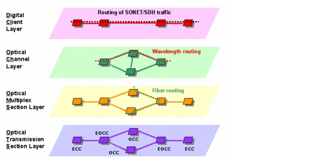

Concepts and Models > SONET and WDM Representation in SP Guru Transport Planner > Layers in SP Guru Transport Planner
SONET and WDM Representation in SP Guru Transport Planner
You can think of a transport network that uses multiple technologies as a number of independent layer networks with a client/server relationship between adjacent layers: the server layer provides transport facilities, which are used to transport client-layer traffic. This means that when a connection is set up in the server (lower) layer, a logical link is created in the client (upper) layer. This logical link provides trunk capacity for client-layer traffic.
Layers in SP Guru Transport Planner
SP Guru Transport Planner has five network layers. From bottom to top, these layers are:
- The Optical Transmission (OTS) layer represents the physical topology, which consists of buildings interconnected by cables.
- The Optical Multiplex Section (OMS) layer represents how fiber pairs are used on different cables of the OTS layer, and which WDM line system type is used on each fiber.
- The Optical Channel (OCH) layer represents optical line systems and cross-connects.
- The Digital Client (DCL) layer represents the STS/STM granularity of the SONET/SDH layer. This layer contains logical links created by wavelengths (which are routed in the OCH layer) between nodes that have OCH counterparts, and physical links between nodes that do not have OCH counterparts.
- The Lower Order Path (LOP) layer represents the VT/VC granularity of the SONET/SDH layer.
When you equip fiber pairs in the OMS layer, this creates available capacity in the form of wavelengths or optical channels (represented by links in the OCH layer). The available capacity of the OCH links depends on the WDM line system types deployed on the fibers.
In contrast with the OTS and OMS layer, the OCH layer is used for routing traffic (such a layer is also referred to as a path layer). OCH traffic is expressed as wavelength demands between node pairs. To fulfill these demands, SP Guru Transport Planner sets up OCH connections between nodes. These connections require spare wavelengths on the OCH links and switching capacity (provided by OXCs) in the nodes.
When SP Guru Transport Planner sets up an OCH connection between two nodes, this creates a logical link in the DCL layer. The capacity that becomes available on the DCL link depends on the bit rate of this optical channel. For example, an OC–48 optical channel results in a DCL link with a capacity of 48 STS–1 time slots. The network can use this DCL capacity to transport DCL connections.
However, not all set-up OCH connections are trailed to DCL links. Some OCH connections can be labeled as native connections. These connections are pure wavelength demands and the wavelengths are not used to convey SONET traffic. Thus, when this type of OCH connection is set up, no logical DCL link is created.
Just as non-native OCH connections result in DCL links, non-native DCL connections result in LOP links. Currently, SP Guru Transport Planner does not model the LOP layer as a full network layer: you cannot route traffic and define equipment for this layer. However, you can define an LOP traffic matrix and then run LOP grooming operations to translate this into a DCL traffic matrix. Then you can use the resulting DCL traffic matrix as you would use any other DCL traffic matrix.
Figure 2-7 Layers in SP Guru Transport Planner

| Home © 1987-2007 OPNET Technologies, Inc. All Rights Reserved. This software may be covered by one or more U.S. Patents. See complete patent notice in the Legal Notices section. OPNET Support Center |